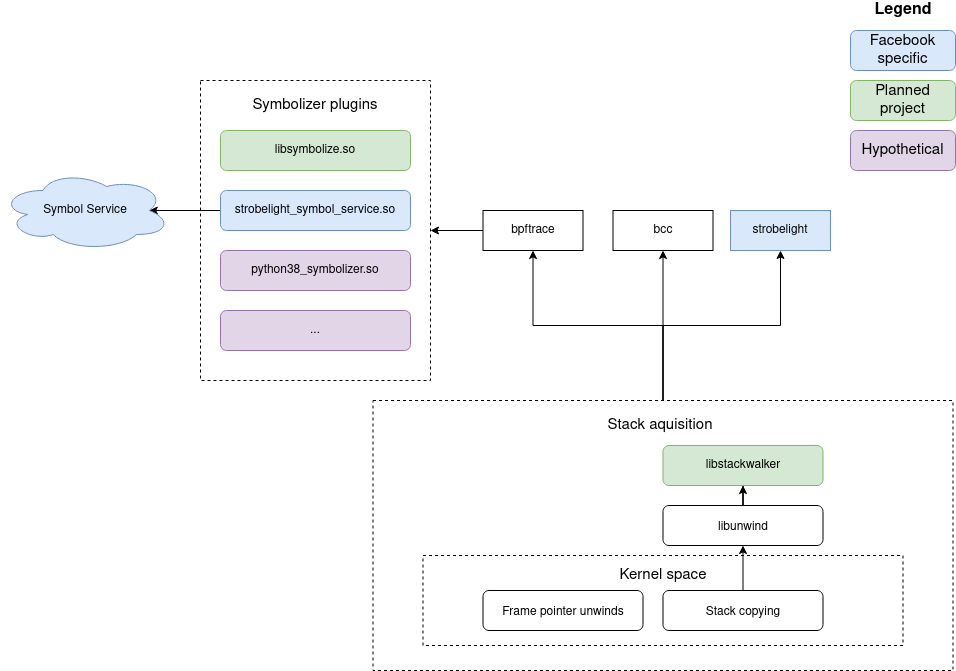

In this document we are proposing solutions for two separate but related problems: stack walking and symbolization. We’ll first go over stack walking and then symbolization.
A call stack is a stack function names. Whenever a function is called, that function name is (conceptually) pushed onto the stack. When that function returns, that function name is popped. Stalk walking is the act of retrieving a program call stack at a certain point of execution. This is a fairly complicated topic and heavily depends on the programming language and runtime (if applicable). For the purpose of this document, we’ll stick to native languages like C/C++/Rust.
There are a number of ways to walk stacks. For a long time, frame pointer based stack walks were the best way to do it. We won’t go into detail here, but frame pointers basically form a chain on the stack such that you can always find the caller’s frame given the current frame. Unfortunately, for various reasons, frame pointers started to fall out of favor as compilers started performing more complex codegen optimizations.
Thus, DWARF-based stack walks were born. Compilers will now (sometimes) generate unwind information in .eh_frame or .debug_frame ELF sections. By parsing this information, you can walk the stack.
Unfortunately, Linus is not a great lover of DWARF, so there is not and probably will not be in-kernel DWARF support. This is why bpf_get_stackid() and bpf_get_stack() will often return gibberish if frame pointers are not built into the userspace application. Thus, a different solution is needed.
Before we move onto solutions, we still need to discuss symbolization. Conceptually, symbolization is very simple. Computers deal with addresses when calling functions. Assuming we sucessfully obtained a call stack as outlined in the previous section, we still need to convert the list of addresses into human readable function names. This process is called symbolization.
A symbolizer takes as input an address along with a process ID or executable and returns the function name (and maybe line number) as output. There are plenty of symbolizers to choose from includig llvm-symbolizer and addr2line. llvm-symbolizer suffers from huge memory consumption issues and addr2line is fairly slow. With modern tools and libraries (e.g. Rust), it should be possible to construct a fast, efficient, and portable symbolizing library that covers all known edge cases. Whether we can execute on this remains to be seen.
In practice, this is a tricky problem. You must deal with inlined functions, VDSO symbols, deleted-but-still-running binaries, debug links, split debug info, and more.

The proposed design for the BPF ecosystem is two-fold:
libstackwalker library that can DWARF-walk a chunk of stacklibsymbolize library that can symbolize addressesFor (1), given that we can’t perform the DWARF walk in kernelspace, we must perform it in userspace. BPF programs will copy out a chunk of the stack (the exact size can be adaptively sized, as we should be able to know in userspace if more stack is required). libstackwalker will then perform the stack walk on that buffer of memory. There will need to be some level of coordination as to whether an executable has frame pointers and can have its stack walked in kernelspace or does not have frame pointers and must be libstackwalkered.
For (2), we will implement libsymbolize (which is another conceptually simple task). On top of that, we will add to bpftrace a dlopen()-based symbolization framework where users can plug and play different symbolizers. This is important because it decouples bpftrace from language/runtime changes. For example, if you were to implement a python symbolizer today, you’d need to reach into the guts of the python runtime (b/c there’s no standard interface) that can change at any time. By decoupling bpftrace from the symbolizer, we can allow python symbolization matched to the python runtime. The decoupling also enables remote symbolization for more controlled environments.
This project is currently in the planning phase. Status updates will be available here as progress is made.